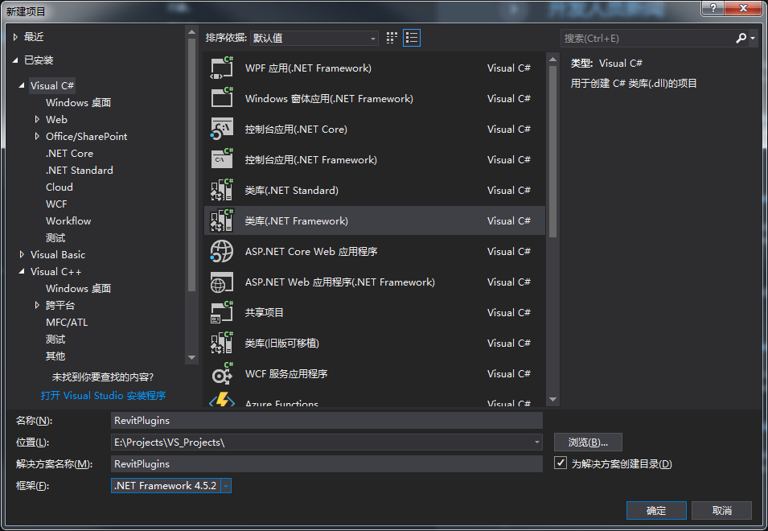
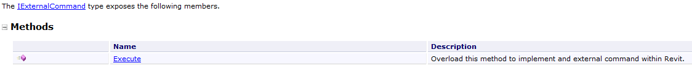
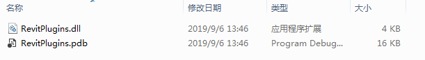
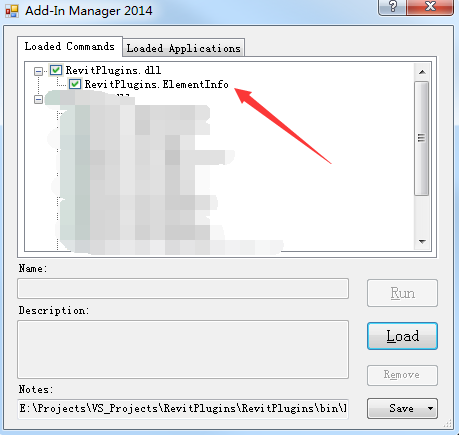
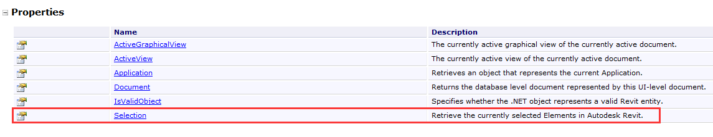
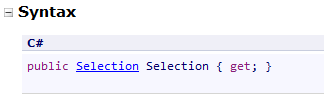
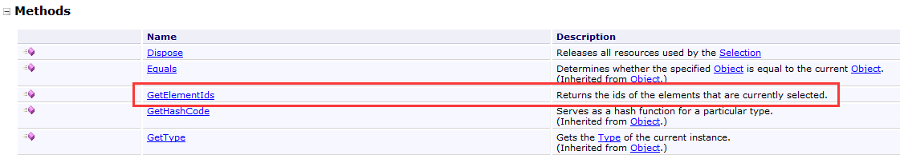
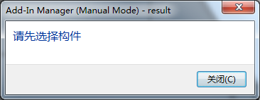
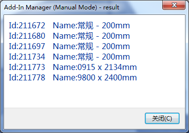

以Visual Studio作为开发工具，测试平台为Revit 2017
打开VS，创建一个C# .NET Framwork类库项目，选择。.net框架版本为.NET Framwork 4.5.2，确定。

RevitAPI.dll和RevitAPIUI.dll，根据情况设置这两个dll的复制本地属性，并更改项目平台目标为x64。ElementInfo。引用相关命名空间：
using Autodesk.Revit.DB;
using Autodesk.Revit.UI;查看API，要在revit内部添加一个外部命令，就必须实现一个IExternalCommand接口。这个接口定义于RevitAPIUI.dll程序集内的Autodesk.Revit.UI命名空间下，我们已经引用了该命名空间，接下来就是继承这个接口并实现。这个接口只有一个Execute函数需要我们去实现。

继承IExternalCommand接口，并实现接口。
[Autodesk.Revit.Attributes.Transaction(Autodesk.Revit.Attributes.TransactionMode.Manual)]
public class ElementInfo : IExternalCommand
{
public Result Execute(ExternalCommandData commandData, ref string message, ElementSet elements)
{
return Result.Succeeded;
}
}这里我们
Execute函数里面只有一个返回Result.Succeeded的语句，即什么事情也不做直接返回成功，通知Revit我这个命令执行完毕并成功。当然也可以写一些简单的语句进行测试。
此时我们右键项目，生成，就会在项目文件夹的bin\Debug目录下生成我们创建的插件dll。

我们在Revit中使用Addin Manager加载运行一下。选择我们创建的外部命令类，点击Run，试运行一下。什么也没有发生也没有报错，和我们预期的一样。

上面的工作相当于将前期设置给设置完成，并验证的整个框架的正确性。下面就是根据业务需求实现自己的业务目标。
假定现在我想得到所有选中的构件的一些属性信息。
首先需要从Revit中选择构件，然后需要再用代码拿到这些构件的引用，要拿到这些，我们需要先拿到Revit中一些常用的object的引用。在我们Execute函数中先添加如下代码：
public Result Execute(ExternalCommandData commandData, ref string message, ElementSet elements)
{
UIApplication uiApplication = commandData.Application;
UIDocument uiDocument = uiApplication.ActiveUIDocument;
Document document = uiDocument.Document;
return Result.Succeeded;
}其中
UIApplication、UIDocument、Document这些分别代表什么含义，可查看API中关于这些类的简介。
再查找API，发现我们想要的Revit选择集中的内容就在UIDocument类中，UIDocument类中有一个Selection属性，其具体描述如下：

点击具体介绍，可以看到这是个只读属性，返回一个Selection对象。

再查看Selection类，它有一个GetElementIds方法，该方法返回当前选择的Element的Id。有了元素Id，就能根据Id找到这个Element。这个方法的返回一个泛型接口对象，我们可以直接定义一个该类型的对象接收它。

循环访问每个ElementId对象，取出这个对象对代表的Element，再访问该Element的属性。
public Result Execute(ExternalCommandData commandData, ref string message, ElementSet elements)
{
UIApplication uiApplication = commandData.Application;
UIDocument uiDocument = uiApplication.ActiveUIDocument;
Document document = uiDocument.Document;
ICollection<ElementId> selectedElIds = uiDocument.Selection.GetElementIds();
string info = "";
//判断用户是否选中了构件
if (selectedElIds.Count != 0)
{
//若选择集中至少含有一个构件，则循环访问每个ElementId
foreach (ElementId elementId in selectedElIds)
{
//根据ElementId得到Element
Element element = document.GetElement(elementId);
//将信息添加到info变量中
info += $"Id:{elementId.IntegerValue} Name:{element.Name}\n";
}
//利用Revit内置的对话窗口显示相关info信息
TaskDialog.Show("result", info);
}
else
{
//若选择集中至少含有一个构件，将提示信息返回给用户
TaskDialog.Show("result", "请先选择构件");
}
return Result.Succeeded;
}重新编译生成，在Revit中用Addin Manager运行。
若没有选择构件：

若选择了构件：

这个案例只是一个非常非常简单的外部命令案例，对于复杂的也类似，万变不离其宗，掌握了基本方法和思路，就能编写出复杂度更高的插件。
如有错误，恳请指正。
Murphy.L
Perhaps, we’ve just forgotten that we are still pioneers.